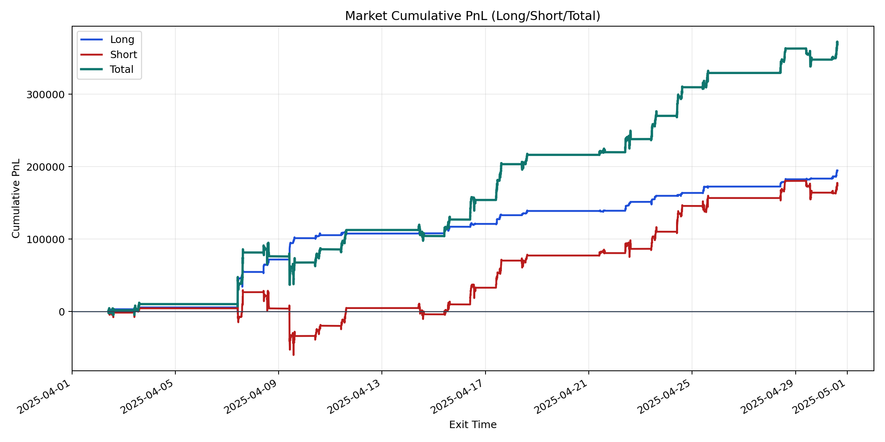
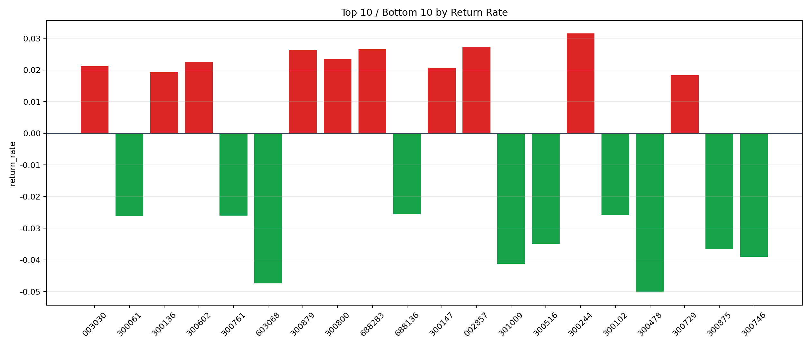

| repo_root | /home/haoranyou/data/output/alpha0.4_1w_5s_3ticks |
|---|---|
| period_months | 1 |
| period_label | 2025-04-02_to_2025-04-30 |
| start_time | 2025-04-02 09:50:17 |
| end_time | 2025-04-30 15:00:00 |
| n_trades | 54355 |
| n_symbols | 1373 |
| total_pnl | 368699.82625000033 |
| long_total_pnl | 194658.11754999994 |
| short_total_pnl | 174041.70870000045 |
| total_entry_notional | 512960472.0 |
| long_entry_notional | 93444562.0 |
| short_entry_notional | 419515910.0 |
| total_return_rate | 0.0007187684946024464 |
| long_return_rate | 0.002083140135538331 |
| short_return_rate | 0.00041486319005160126 |
| top_symbols_by_return | ["300244", "002857", "688283", "300879", "300800", "300602", "003030", "300147", "300136", "300729"] |
| bottom_symbols_by_return | ["300478", "603068", "301009", "300746", "300875", "300516", "300061", "300761", "300102", "688136"] |

